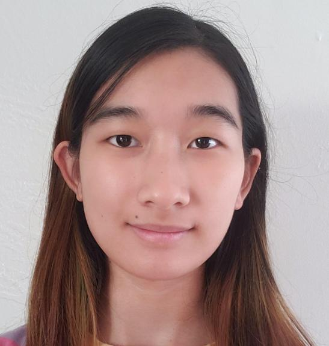

CS 194-26 Fall 2020, Project 3: Face Morphing - April Sin
Table of Contents
Project Overview
In this project we want to create a morphing between two faces,
compute the “mean” face of a population, and also do extrapolation to
get caricature results.
Morphing Two Images
1. Alignment
The first step to morphing two images it to align them so they are on
the same coordinate plane. Then we can pick points of correspondences
that makes sense.
2. Compute the Middle Object
Using the points of correspondences, we can the shape vector of the
middle image. And use that to calculate a common delaunay
triangulation that can be applied to both images.
Then, we compute the average colors of the images by averaging
values.
Mathematically, it would be
alpha * image1 + (1-alpha) * image2
The middle image is the result when alpha = 0.5
|

Aligned Picture of Me
|
 Aligned Picture of I.U.
Aligned Picture of I.U.
|
 Middle Image
Middle Image
|
3. Morphing Sequence
To make this into a video, we just need to calculate the middle
objects of each frame. All we need to do is to variate alpha.
INSERT VIDEO / GIF HERE
Computing the “mean” face of a population
To find the average face of a population, we apply the same logic. We
find the average shape by interpolating all shape vectors. Warp all
the individual images to the average shape. And combine the weighted
pixel values.
Caricature
We can make our faces look more cartoon-like by extrapolating our
unique qualities. First, find the difference between my face’s shape
vector and the population mean’s shape vector. Then emphasize the
difference (i.e. my unique qualities) by adding it to the original
image of myself.
Bells and Whistles
A group of students, including myself, have created a video of our
faces morphing to one another! Check this out.
INSERT YOUTUBE LINK
CS 194-26 Fall 2020, Project 3: Face Morphing - April Sin
Table of Contents
Project Overview
In this project we want to create a morphing between two faces, compute the “mean” face of a population, and also do extrapolation to get caricature results.
Morphing Two Images
1. Alignment
The first step to morphing two images it to align them so they are on the same coordinate plane. Then we can pick points of correspondences that makes sense.
2. Compute the Middle Object
Using the points of correspondences, we can the shape vector of the middle image. And use that to calculate a common delaunay triangulation that can be applied to both images.
Then, we compute the average colors of the images by averaging values.
Mathematically, it would be
The middle image is the result when alpha = 0.5
3. Morphing Sequence
To make this into a video, we just need to calculate the middle objects of each frame. All we need to do is to variate alpha.
INSERT VIDEO / GIF HERE
Computing the “mean” face of a population
To find the average face of a population, we apply the same logic. We find the average shape by interpolating all shape vectors. Warp all the individual images to the average shape. And combine the weighted pixel values.
Caricature
We can make our faces look more cartoon-like by extrapolating our unique qualities. First, find the difference between my face’s shape vector and the population mean’s shape vector. Then emphasize the difference (i.e. my unique qualities) by adding it to the original image of myself.
Bells and Whistles
A group of students, including myself, have created a video of our faces morphing to one another! Check this out.
INSERT YOUTUBE LINK